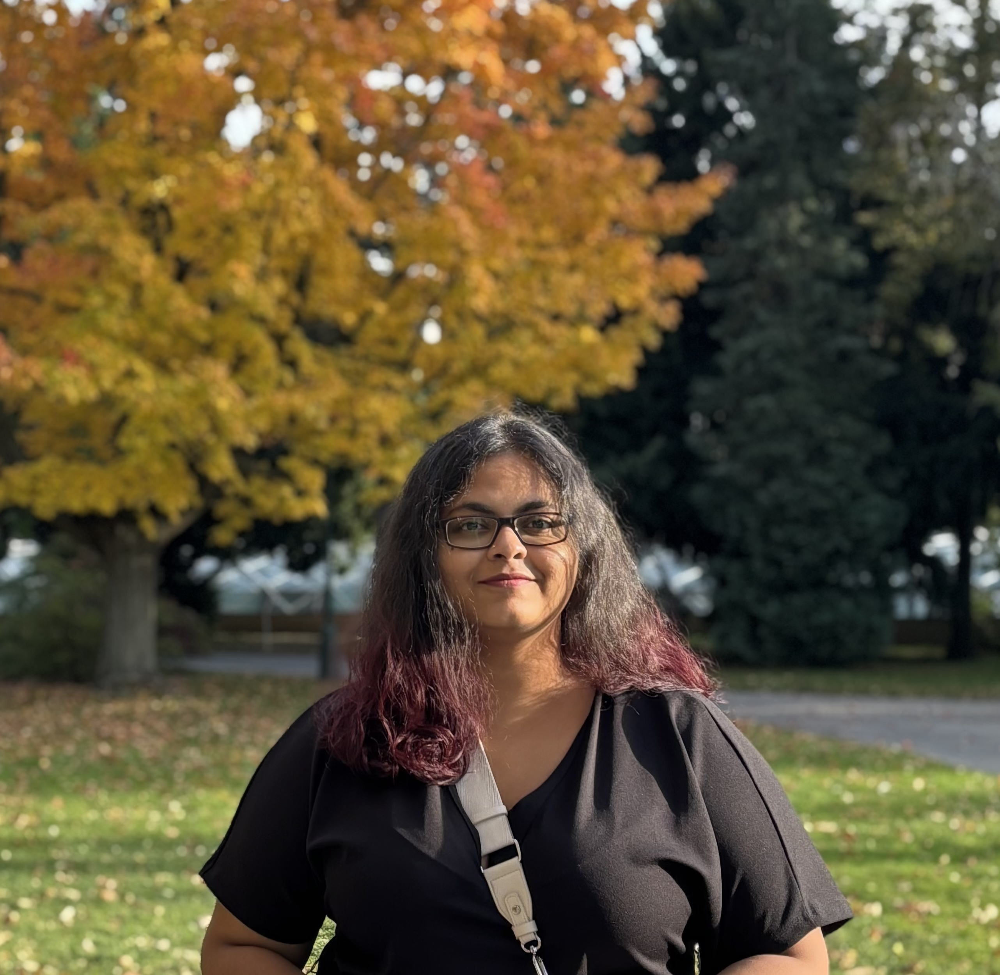

Hi, my name is Asmita Sengupta. I'm a Master's student in Computer Science at RPTU Kaiserslautern-Landau, majoring in Intelligent Systems with a minor in Visualisation and Scientific Computing. I am currently a student research assistant in the Visual Information Analysis Group at RPTU, where I am also completing my Master's thesis. Previously, I worked as a research assistant in the Data Science and Its Applications Group at the German Research Center for Artificial Intelligence (DFKI).
My research interests lie in natural language processing, machine learning, and applied AI, particularly in anomaly detection for time-series data and the use of large language models to extract and structure knowledge from scientific and biomedical literature. I am also interested in AI methods that promote transparency and reproducibility in science.
Selected Projects
In my Master's thesis I study forecasting-based anomaly detection on industrial multivariate sensor data. I evaluate how design choices like the model architecture, the residual scoring, and the threshold affect detection performance, with the goal of building robust detectors for real-time monitoring across different sensors in industrial settings.
An automated pipeline for auditing reproducibility reporting in AI papers using rule-based NLP and zero-shot LLMs. Evaluated on a manually annotated benchmark of 60 papers, it achieved 92% accuracy and a Cohen's κ of 0.84. The framework was then applied to over 3,000 papers from NeurIPS, ACL, and AAAI to analyze reporting practices across venues and over time.
An LLM pipeline that turns 13,000+ drug leaflets into a structured knowledge graph, with quality checked through both human review and an LLM-as-a-judge framework.
An interactive dashboard for a century of film data (1920–2020), covering revenue, genres, and the networks of who worked with whom, plus a simple recommender for similar titles. Built with Svelte and D3 using bubble charts, heatmaps, and network graphs.
Publications